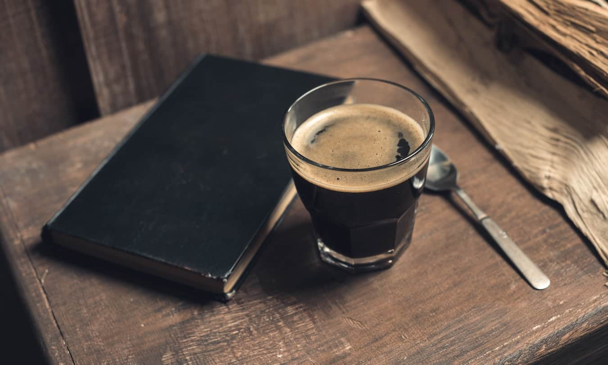
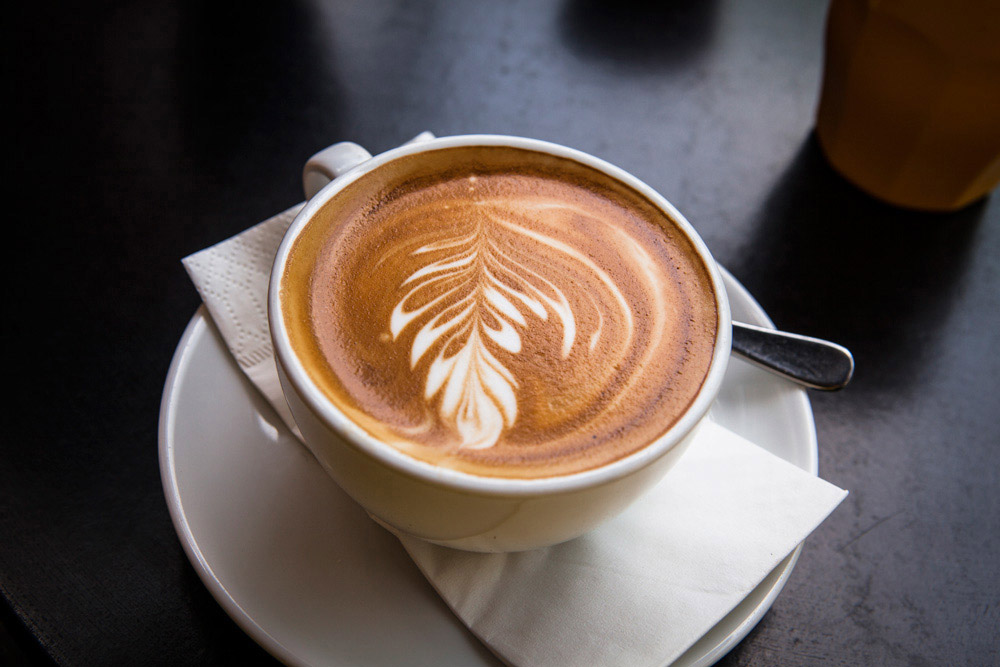
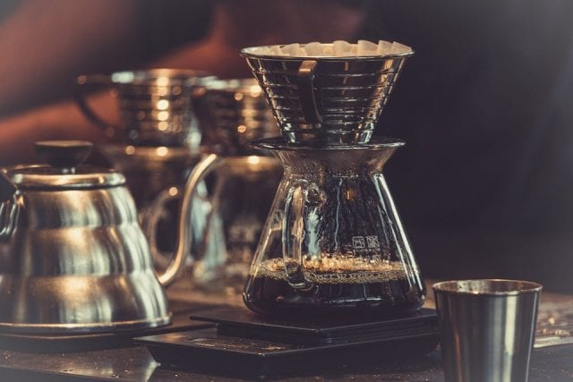
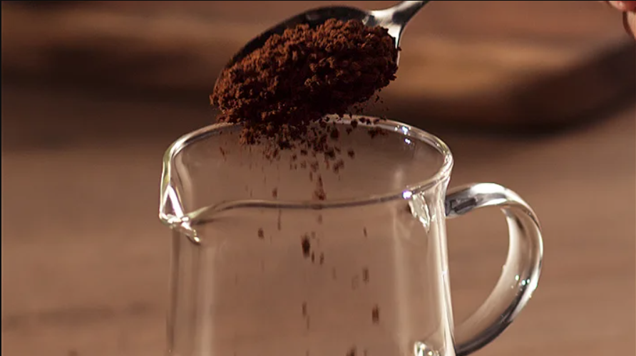
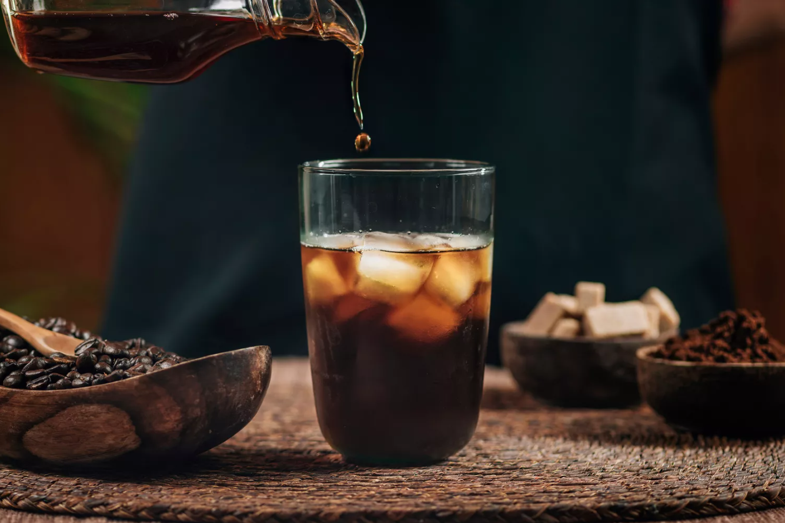
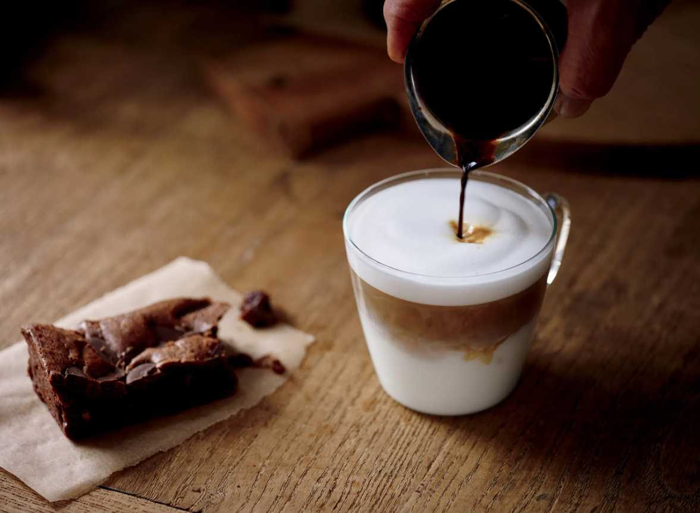

What is an Americano?

An americano is quite simply just hot water and espresso. It'll either be served 1/2 and
1/2 or 1/3 espresso to 2/3 water, depending on the coffee shop in question or how you've
chosen to brew it. There is a dispute about whether the espresso or the water should be
added first, but in the case of the americano, espresso should always be added first as
the crema mixes in and creates a more mellow, even taste. But some people may add it
depending on their personal preference. Whilst most other espresso-based coffee drinks
include milk, such as the cappuccino or latte, the americano stands out amongst them.
What is a Flat White?
 white coffee with a leaf pattern">
A flat white is a blend of micro-foamed milk poured over a single or double shot of
espresso. This microfoam is steamed milk infused with air, to create a smooth and velvety
texture and creamy taste. Precise pouring and steaming of the microfoam is essential in
making
a flat white.
What is drip coffee?

Drip coffee is made by pouring boiling water over ground coffee (the grind of which being
much coarser than espresso). A filter that is typically made from paper separates the
grounds from the brewed liquid which allows the water to pass through and fall into a pot
or jug. However, you can now also get coffee pots which are especially for drip coffee
brewing or electric options which you can set timers on so you can choose what time it's
made. When it comes to serving drip coffee it's generally done in a mug and can be drunk
black or with milk and sugar to taste.
What is instant coffee?

Instant coffee is made from real coffee beans. The soluble and volatile contents of the
beans are extracted. Then the water is removed so powder or concentrated soluble coffee
powder are left over. It's essentially been dehydrated for our convenience - just add
water and you have yourself a brew!
What is decaf coffee?
Decaf coffee is made from regular coffee beans that go through a process to remove the
majority of the caffeine. However, decaffeinated coffee is not completely caffeine free,
and EU regulation for decaf coffee is less than 0.3% caffeine.
What is Cold Brew Coffee?

Cold brew coffee is made by slowly steeping coarsely ground coffee beans in room
temperature water for at least six hours (it can be as much as up to 24, but it depends on
how strong you want your cold brew it to be, many choose to do it overnight). When the
beans are steeped like this it creates a strong coffee concentrate that just needs to be
mixed with water and milk to taste.
As the grounds aren't exposed to hot temperatures, cold brew coffee has a more flavourful,
sweeter and less bitter and acidic taste. In a recent study, cold brew coffee was found to
be between 50 - 67% less acidic than the average cup of coffee.
It's a common misbelief that cold brew has to be cold, in actual fact it can be served
piping hot too! If you want it cold, simply add cold water, ice and milk (to taste) and
for hot you just need to boil water or add hot milk (some will even pop it in the
microwave if they're in a rush).
What is a Macchiato?

In Italian, the term "macchiato" translates as "marked" or
"stained", meaning a stained or marked coffee. The macchiato is an espresso coffee drink,
topped with a small amount of foamed or steamed milk to allow the taste of the espresso to
still shine through. A macchiato is perfect for those who find espresso too harsh in
flavour,
but a cappuccino too weak.